Social Scramble
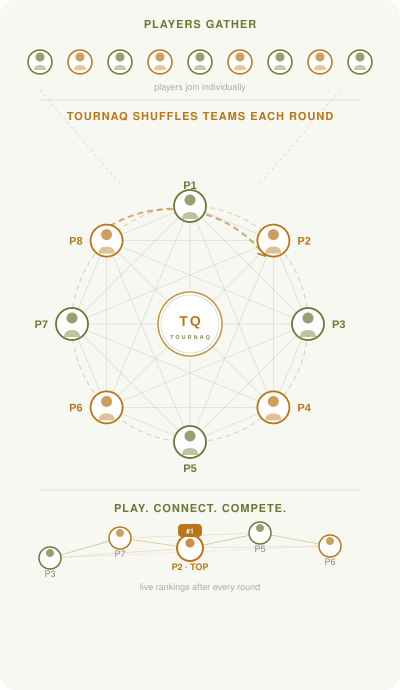
Set the match time, tournament length, courts, and number of players. TournaQ automatically creates the schedule, rotates players into new teams every round, and tracks live rankings throughout the event. Players enter as individuals — no fixed teams needed. Each round brings new partners and new opponents, so everyone gets to meet, compete against, and connect with the whole group.
Best for
- Social beach volleyball events where mixing people is the priority
- Group training sessions where every player should meet every other player
- Club socials with 6 to 20+ players and a defined time slot
Tournament Setup
Tap New Tournament to open the setup form. Enter the number of players, the time available, match duration, number of courts, format, and break length. The app instantly calculates how many rounds fit in the available time and shows a live schedule preview as you adjust the settings.
Tournament Settings
Configure target players, available time, match duration, courts, format (2v2), break between rounds, and planned start time. The Schedule Preview section updates in real time — showing total rounds, scheduled duration, and estimated end time as you adjust each field.
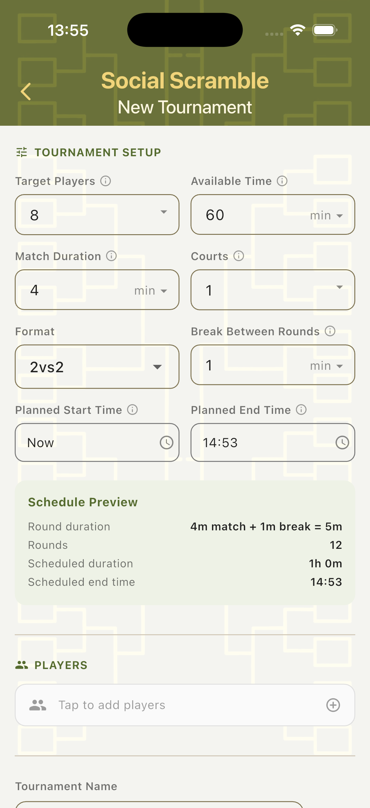
Smart Suggestions
The Suggestions section analyses your setup and flags when the schedule may not be optimal — for example, if there are too few rounds for every player to partner with every other player, or if the game count is uneven across players. Each suggestion shows the time adjustment needed and a quick-apply shortcut.
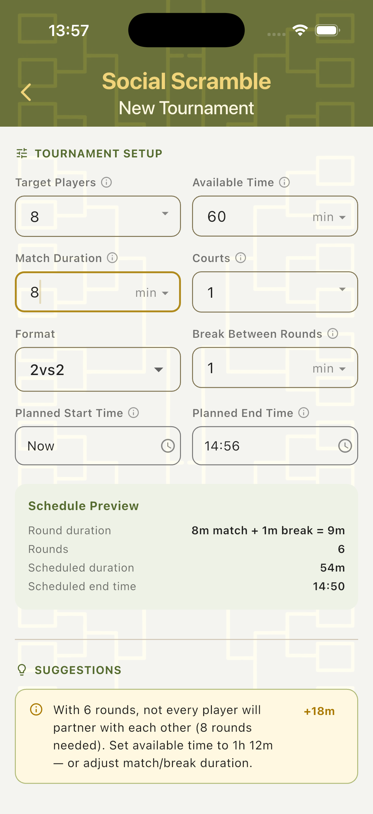
Add Players
Tap the Players field to open the player panel. Create new players on the spot, add from the existing Players Hub (with a searchable list of all saved players), or use Fill Random to quickly populate the tournament with placeholder names for testing.
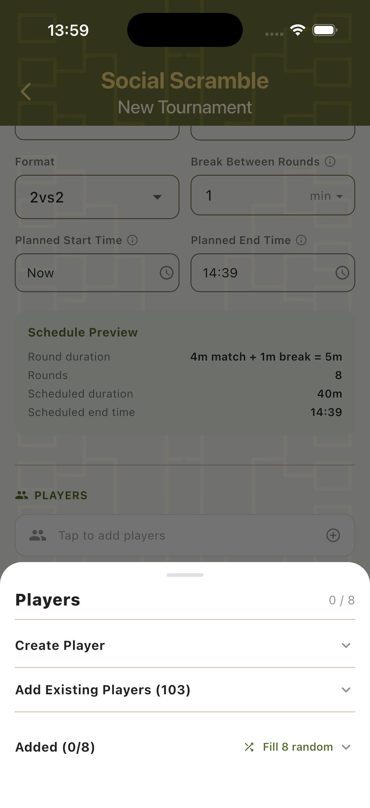
Tournament Dashboard
Once a tournament is created, the dashboard shows the full picture in one view: game progress, player list with live stats, and the complete round-by-round schedule. Players can be added, swapped, or removed at any point during the tournament.
Players & Live Schedule
The main tournament view shows the player list with running game counts and points, plus the full schedule below. Each round entry shows the matchup (team names and individual players), the assigned court, and the suggested referee. Tap any game to open its scorecard.
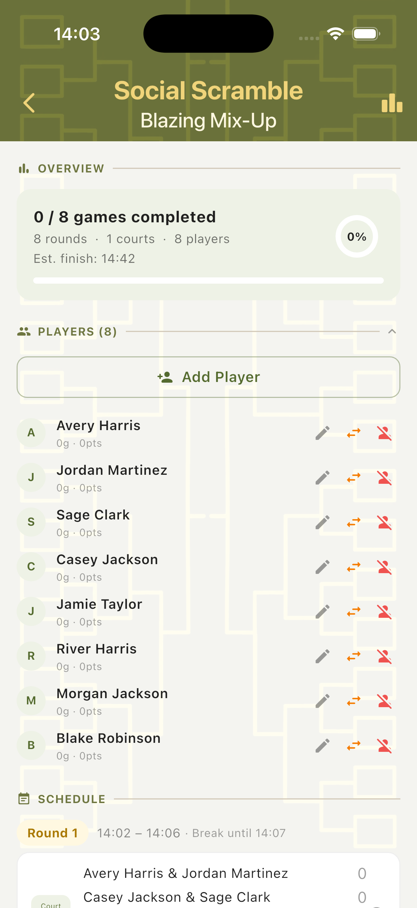
Schedule Preview
Expand the Schedule Preview to see all rounds in a timeline with their planned start and end times, and break windows. Each round is marked as Completed, Overdue, Due, or Upcoming — giving a clear view of tournament progress at a glance.
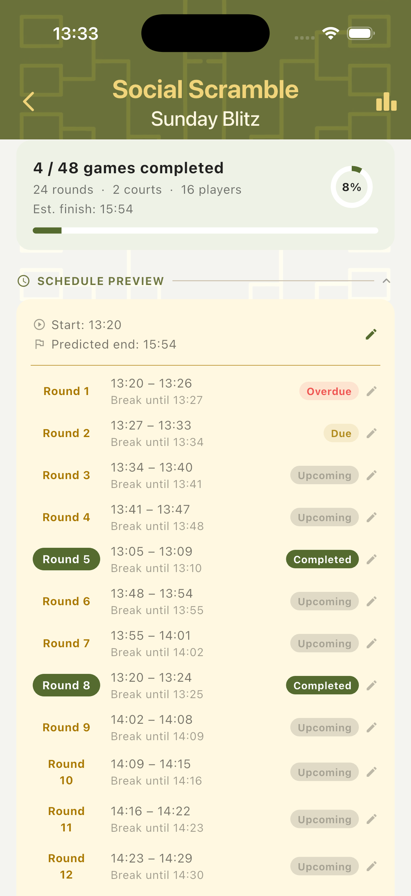
Scorecard
The Social Scramble scorecard is time-based. Each game has a built-in match timer set to the configured match duration. The scorecard shows the schedule status, match timer, team cards, and all tournament context — round, court, time slot, format, and the suggested referee.
Ready to Start
Before the timer starts, the scorecard shows the full match context: tournament name, round number, court, scheduled start time, match duration, format, and player count. A suggested referee is displayed. Tap Start Match to begin the countdown, or Manually Set Score to enter a result directly without using the timer.
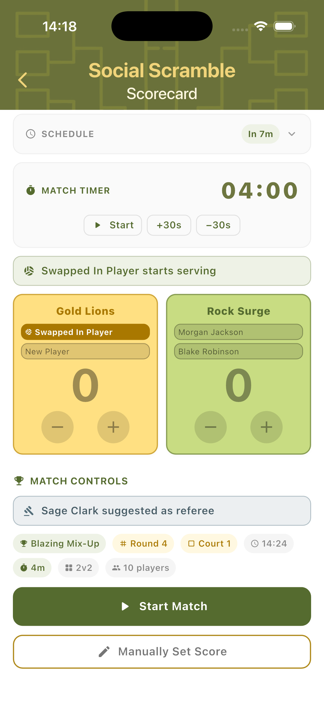
In Play
Once the match starts, the countdown timer runs at the top. Both team cards show player names, current score, and plus/minus buttons. The schedule status shows whether the game is running on time or overdue. The serving player is highlighted within the team card.

Landscape Mode
Rotate the device to switch to landscape view. The timer and timer controls appear on the left, with both teams stacked vertically on the right. Useful when the phone is placed on the net post or a table sideline during play.

Completing Games
When the match timer reaches zero, the app prompts whether the final rally was still in play. If needed, you can adjust the score before locking the result. Once complete, a "Select Next Game" panel appears so the next match can be started immediately from the same screen.
Time is Up
When the timer hits zero, a "Time is up" dialog appears asking whether a rally was still in progress when the buzzer sounded. Choose Adjust Final Score to modify the result, or Complete Game to lock the score as-is and finalise the match.
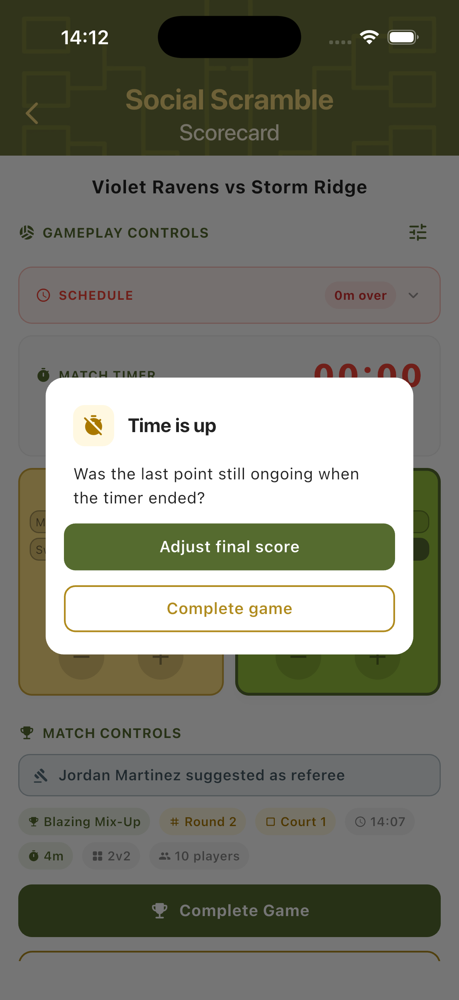
Adjust Final Score
After time expires, the scorecard remains editable — showing Adjust Final Score and Restart buttons in place of the timer controls. Correct the score if a point was scored on the last rally, then tap Complete Game to finalise. The score is locked and saved to the tournament.
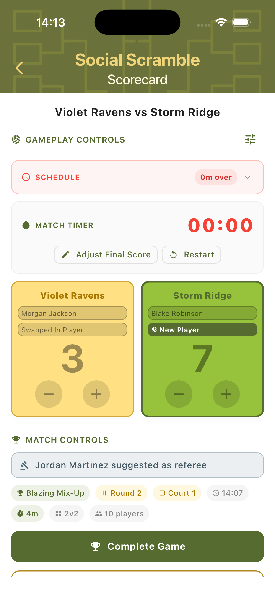
Select Next Game
Once a game is completed, a Select Next Game panel slides up showing all remaining matches with their round, court, and scheduled time. Tap any upcoming game to jump straight to its scorecard — no need to navigate back to the tournament overview.
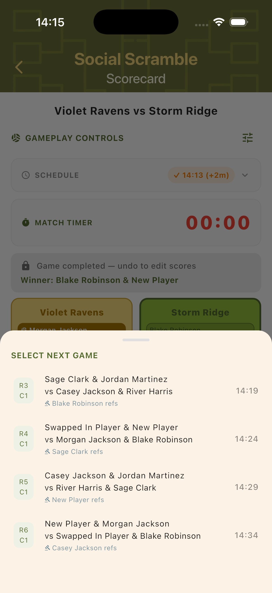
Player Rankings
Rankings are calculated continuously throughout the tournament. Each player accumulates Ranking Points (RP) based on wins, draws, and score differences. Rankings can be viewed live at any point and a final standings screen is shown when all games are completed.
Live Rankings
The live ranking table shows each player ranked by RP, with columns for wins (W), draws (D), losses (L), and score differential (+/−). The tournament leader is highlighted in gold. Rankings update after every completed game.
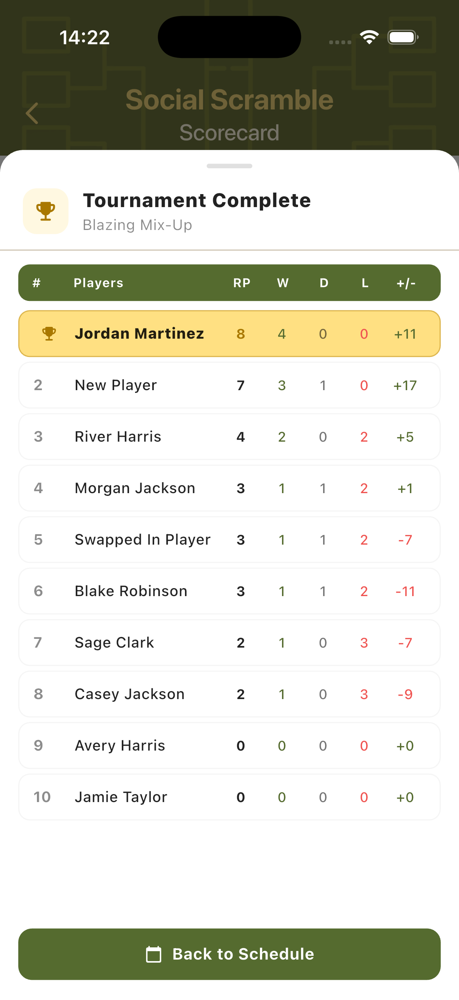
Final Standings
When all games are completed, the final Player Rankings screen shows the definitive standings with full stats for every player. The winner is highlighted at the top. Players marked as late arrivals or substitutes are flagged with status tags next to their names.
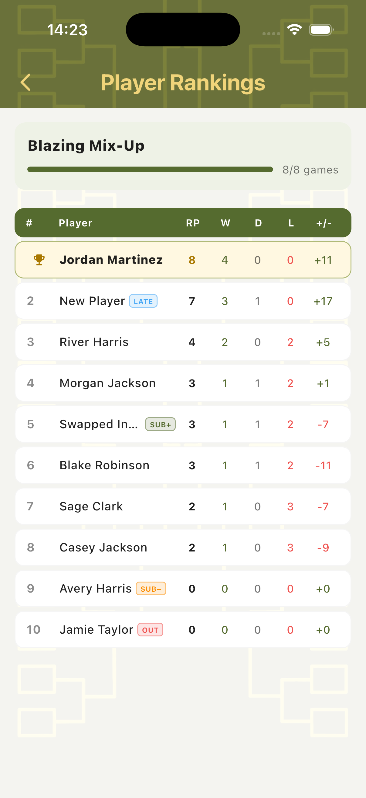
Step-by-Step Workflow
- Open TournaQ and navigate to Social Scrambles.
- Tap New Tournament to open the setup form.
- Set the number of players, available time, match duration, courts, format, and break length.
- Review the Schedule Preview and act on any Suggestions to optimise partner coverage or game balance.
- Add players — create new ones, import from the Players Hub, or use Fill Random.
- Give the tournament a name and tap Create Tournament.
- From the tournament dashboard, tap the first game in Round 1 to open its scorecard.
- Confirm the referee suggestion and tap Start Match to begin the countdown timer.
- Use the + and − buttons to track scores during the match.
- When the timer expires, confirm or adjust the final score and tap Complete Game.
- Use Select Next Game to jump to the next match without returning to the dashboard.
- Continue until all rounds are complete. Review the final Player Rankings.
Have a question about Social Scramble, spotted something missing, or want to suggest an improvement?